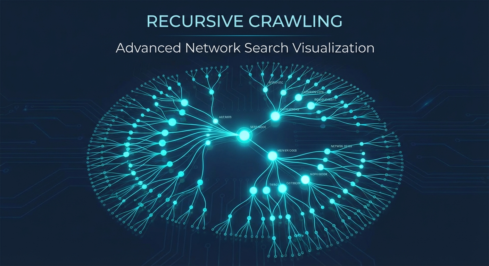

Search Google, fetch top results, and analyze content with intelligent, recursive web traversal strategies.
Try the SimulatorPowered by advanced fetching and processing strategies.
Initialize crawls via Google Search, direct URLs, or specialized Search APIs (Maps, Scholar, Patents).
Choose from strategies like Summarization, Fact Checking, Job Matching, or Schema Extraction.
Automatically follow relevant links found in analyzed pages with configurable depth and queue limits.
Respects ethical crawling standards by default, parsing robots.txt rules for every domain.
Produces detailed logs and final reports in Markdown format, ready for downstream agent consumption.
Utilizes Selenium for dynamic JS-heavy sites or lightweight HttpClient for speed and efficiency.

Status: Idle
Queue Size: 0
Processed: 0
Errors: 0
Generate initial URLs via Search API or Direct Input.
Check robots.txt, blacklists, and domain restrictions.
Download content using HttpClient or Selenium WebDriver.
Apply strategy (Summarize, Extract, Verify) to content.
Extract new links and add to priority queue (if depth allows).
Aggregate trends, competitor pricing, and product announcements from across the web into a single summary report.
Verify claims by cross-referencing multiple authoritative sources found via Google Scholar or News.
Scan multiple career sites and company boards to compile a structured list of open positions matching specific criteria.
Crawl documentation sites to extract API schemas or usage examples for a specific library.